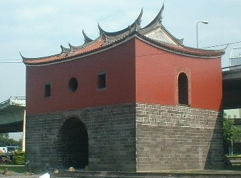
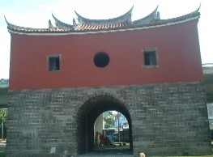
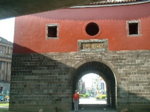
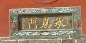
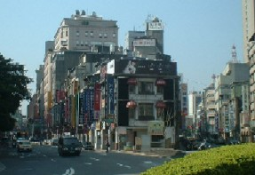

台北駅の近くに、昔の台北城の北門（きたもん）が残っている。観光案内には、「城壁は1882年（清の時代）に築かれた。周囲５km弱で旧市内を囲んでいた。しかし城壁は日本統治時代に取り壊されてしまった」とある。

旧台北市を囲んでいた城壁が残っていればもっと壮観だっただろうが、壊したのにも理由がある。台北市が外側にむかってどんどん発展し、外側と中側を隔てる城壁がジャマになってしまった。そこで城壁をすべて撤去し、中と外を隔てる壁をなくすとともに、城壁跡も市をぐるりと取り囲む環状的な道路とした。それで交通の便が思い切りよくなったというわけ。
この城門は東西南北 それぞれにあったが 他はいろいろ改造され、原型をとどめているのは北門だけ。しかし城門が残っているだけなので、有名観光地ではない。観光バスならガイドさんが「右手をご覧ください」といって話だけで済ませるようなマイナーなところ。しかしこちらは無敵の自由旅行(笑)、ホテルから徒歩で わざわざ行ってきた。行ってきて良かったぞ。
まさに百聞は一見にしかず。見るからにどっしりしていて、映画やマンガで見る古代中国 国家都市の城門という感じ。
真ん中にトンネルのような口が開いているが、ここが人の通るところ。正面から見るとこんな感じ。トンネルを入ると、中央あたりに両開きの分厚い鉄門がある。それをギィーと閉めてしまえば、簡単に打ち破ることはできない。

しかし上の写真は、実は裏側（街中から外側を見た光景）、表側（外側から街中を見た光景）はこんな感じ。立っているのは女房。写真サイズを門の扁額の文字も読めるくらいに大きくすると迫力あるが、女房が「顔は出すな」というので この大きさに....(^-^；

そこで扁額だけup。
下の写真が 外側から門をくぐり抜けて街中をみた光景。この辺りは、日本統治時代のビルが残っている。

|